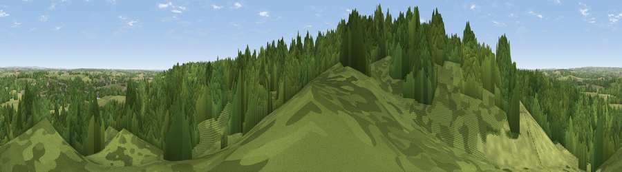

Viewpoint near Colwich
#31154 in England · top 52% of its area beats it · near ColwichWhere it is
The exact computed spot (SK 00025 20225). Click the marker for map links.
The view, rendered

A 360° render of this exact spot computed from the terrain model, tree cover and land cover — summer colours, afternoon light, calibrated against photographs of famous viewpoints. Real trees, hedges and buildings will differ in detail.
The panorama
Grey silhouette: terrain skyline in each direction (720 bearings, Earth curvature and refraction included). Dashed green: skyline with trees (+15 m) and buildings (+8 m) as obstacles. Blue strip: how far the ground is visible on each bearing.
Where the view opens
Wedge length = distance to the farthest visible ground on that bearing (vegetation-aware). Rings at 10, 25 and 50 km.
What fills the view
75% woodland · 21% grassland · 3% cropland · 1% built-up
Angular shares of the visible panorama (visual magnitude), not map area. Landscape diversity 0.30 (0–1 Shannon).
Key numbers
More beautiful places nearby
The staircase of upgrades: each row has a higher view potential than everything closer. Driving times are estimates from straight-line distance, calibrated against real road routing — check an actual route before setting out.
| Place | Direction | Drive | Score |
|---|---|---|---|
| Viewpoint near Colwich | ESE · 1 km | ~3 min | 45.8 |
| Viewpoint near Bishton | ESE · 1 km | ~4 min | 51.7 |
| Viewpoint near Slitting Mill | ESE · 3 km | ~7 min | 52.4 |
| Viewpoint near Brereton | SE · 6 km | ~13 min | 52.5 |
| Viewpoint near Upper Longdon | SE · 7 km | ~15 min | 55.9 |
| Viewpoint near Huntington | SSW · 8 km | ~16 min | 60.2 |
| Wimblebury Hill | SSE · 9 km | ~18 min | 62.0 |
| Viewpoint near Streetly | SSE · 23 km | ~39 min | 69.5 |
52.77961, -2.00107 · source: screening · position refined by local search. Computed location — check access rights before visiting.